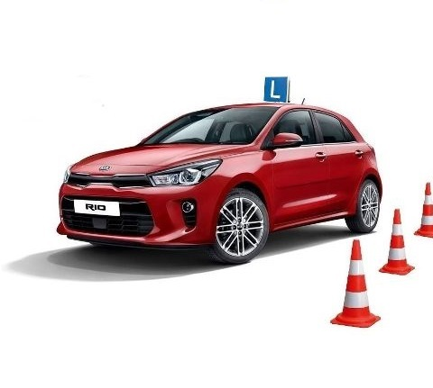

NASZE REALIZACJE
 Szkoła Nauki Jazdy Speed rozpoczęła swoją działalność w 1990r. ( przeszkoliliśmy już ponad 40 tysięcy osób). Szkolimy na wszystkie kategorie prawa jazdy tj; A, B, T, C, D, B+E, C+E. Możemy pochwalić się tym, że jesteśmy najstarszą jednostką na lubelszczyźnie. Szkolimy na terenie woj Lubelskiego – Chełmie, Hrubieszowie, Zamościu, Krasnymstawie. Zapewniamy solidny kurs teoretyczny z wykładami prowadzonymi przez doświadczonych wykładowców z wykorzystaniem najnowocześniejszych pomocy naukowych. Wykłady prowadzone są w nowoczesnych salach wyposażonych we wszelkiego rodzaju niezbędne pomoce dydaktyczne tj. plansze sytuacyjne, znaki drogowe,rzutniki i komputery. Każdy z kursantów może bez ograniczeń korzystać z komputerów dostępnych w szkole i pogłębiać swą wiedzę w komfortowych warunkach. Nauczamy poprzez doświadczonych wykładowców,oferujemy wykłady multimedialne jak i zapewniamy materiały naukowe w postaci książek, płyt cd oraz testów. Zajęcia prowadzone są w tempie dostosowanym do możliwości kursantów i przebiegają w miłej, spokojnej atmosferze. W trakcie nauki praktycznej naszym kursantom towarzyszą doświadczeni instruktorzy z wieloletnim stażem. Nasi instruktorzy miło i fachowo zapoznają z techniką jazdy samochodem,oraz kryteriami jakie brane są pod uwagę na egzaminie państwowym. Nauka praktyczna odbywa się zawsze w pojazdach tego samego typu, co używane przez Wojewódzki Ośrodek Ruchu Drogowego, gdzie odbywają się egzaminy na prawo jazdy. Dzięki temu nasi kursanci mogą zaznajomić się z obsługą dokładnie takiego pojazdu, jaki spotkają na egzaminie. Serdecznie zapraszamy do naszej szkoły na kurs nauki jazdy. Dołożymy wszelkich starań,aby był to owocnie spędzony czas. Zachęcamy do kontaktu z nami. Odpowiemy na wszystkie twoje pytania.